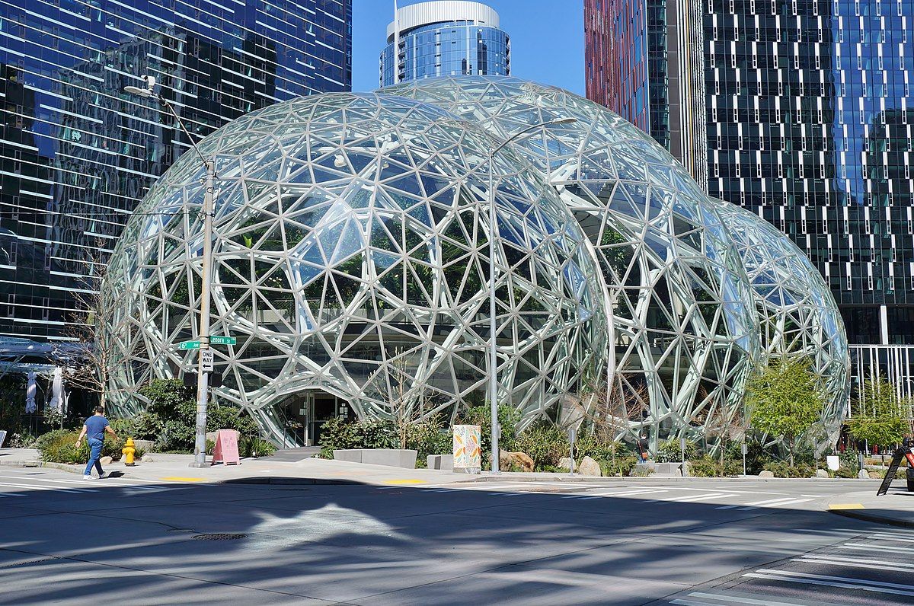

Online Shopping #just at home
Work Hard Have Fun Make Histori
Amazon.com, Inc. adalah multinasional teknologi Perusahaan Amerika yang berfokus pada e-niaga, komputasi awan, streaming digital dan kecerdasan buatan. Ini adalah salah satu dari Lima Besar perusahaan di industri teknologi informasi AS, bersama dengan Google (Alphabet), Apple, Meta (Facebook) dan Microsoft. Perusahaan ini telah disebut sebagai "salah satu kekuatan ekonomi dan budaya paling berpengaruh di dunia", serta merek paling berharga di dunia.
CEO Amazon
Jeffrey Preston Bezos (lahir 12 Januari 1964) adalah Salah Satu Pengusaha terkaya di dunia. Ia adalah pendiri, ketua, CEO, presiden dan pemilik saham mayoritas perusahaan teknologi terbesar di dunia Amazon.com. Lulusan Universitas Princeton, Bezos pernah menjadi anggota Phi Beta Kappa, bekerja sebagai analis keuangan untuk D. E. Shaw & Co. sebelum mendirikan Amazon pada tahun 1994. Ia pernah dipilih sebagai Person of the Year oleh majalah TIME.

Deskripsi
Amazon Deskripsi
Pada 1994, Jeff Bezos membuat Amazon. Dia memilih lokasi Seattle karena bakat teknis karena Microsoft berlokasi di sana. Pada Mei 1997, organisasi ini menjadi publik. Perusahaan ini mulai menjual musik dan video pada tahun 1998, di mana ia mulai beroperasi secara internasional dengan mengakuisisi penjual buku online di Inggris dan Jerman. Tahun berikutnya, organisasi ini juga menjual video game, elektronik konsumen, barang-barang untuk perbaikan rumah, perangkat lunak, permainan, dan mainan di samping barang-barang lainnya. Pada tahun 2002, perusahaan memulai Amazon Web Services (AWS), yang menyediakan data tentang popularitas situs Web, pola lalu lintas internet dan statistik lainnya untuk pemasar dan pengembang. Pada tahun 2006, organisasi ini mengembangkan portofolio AWS ketika Elastic Compute Cloud (EC2), yang menyewakan daya pemrosesan komputer serta Simple Storage Service (S3), yang menyewakan penyimpanan data melalui Internet, tersedia. Pada tahun yang sama, perusahaan memulai Pemenuhan oleh Amazon yang mengelola inventaris individu dan perusahaan kecil yang menjual barang-barang mereka melalui situs internet perusahaan. Pada 2012, Amazon membeli Kiva Systems untuk mengotomatiskan bisnis manajemen inventarisnya, membeli rantai supermarket Whole Foods Market lima tahun kemudian pada 2017
Our Top Partners
Partners